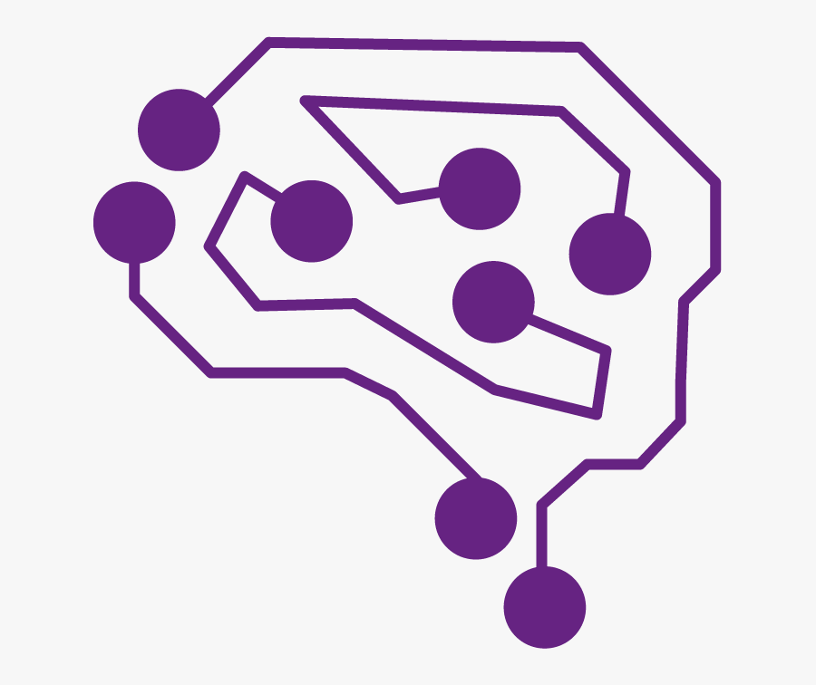

The World Bee Project
With the seemingly limitless possibilities of artificial intelligence, its power to aid in the general good of the
world is proving to be strong. The World Bee Project is the world’s first globally operated organization dedicated
to monitoring the planet’s bee population. In 2014, the organization teamed up with scientists, beekeepers, and farmers
to gather information and feel the temperature of global bee populations. Shortly after in 2018, The World Bee Project
invited Oracle Technology to create solution-based ideas to tackle the issue of the declining bee population working
with technology. From the two teams and other partners came the World Bee Project Hive Network. Using a network of
connected beehives, The World Bee Project Hive Network collects important data. This data is sent to Oracle’s Cloud
which then provides researchers with new information and insights. Using artificial intelligence, other analytics,
and data visualisation, researchers connect the information in the received data to the relationships between honey
bees in their respective environments. Among the technology used are sound and vision sensors alerting the presence
of hornets harmful to bees. Bernard Marr of Bernard Marr & Co writes, “Since it's a globally connected network,
the algorithms can also learn more about differences in bee colonies in different areas of the world. Students,
researchers, and even interested citizens can also interact with the data, work with it through the hive network's
open API, and discuss it via chatbot.” Founder and Executive President at The World Bee Project, Rumani Malik,
concludes with, “Our partnership with Oracle Cloud is an extraordinary marriage between nature and technology.
It will engage the public into caring more and more for pollinators, it will enable advanced research and,
crucially, action on a scale previously impossible to achieve. The more we understand the relationships
between pollination, food and human wellbeing, the more we can do to protect bees and pollinators – and help
protect our planet and ourselves.”